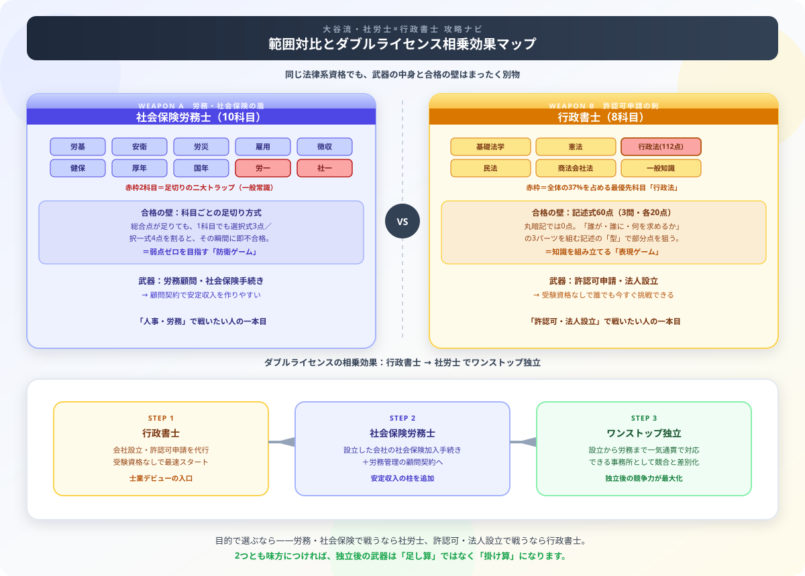

社労士 vs 行政書士 どっちを先に取るべき？難易度・独立・将来性を徹底比較【2026年版】
「社労士と行政書士、どっちを先に取ればいいですか？」——これ、僕が会計士受験生の友人からも本当によく聞かれる質問なんです。正直に言うと、この2つを「ライバル資格」として比較するのは、実はもったいない発想です。
会計士試験で日々「一点の科目も落とせない」緊張感と戦っている僕から見ると、この2資格は敵同士ではなく、「行政書士で会社を作り、社労士でその会社を守り続ける」という最強タッグを組める相棒なんですよ。今回は、目的別の武器の選び方と、ダブルライセンスで独立後の競争力を跳ね上げる戦略的な取得順序を、僕の視点で徹底ナビゲートします！読み終わったら、記事末尾の【いいねボタン】のプッシュをお願いします。

社労士（10科目・足切方式）と行政書士（8科目・記述式60点）の範囲対比、および行政書士→社労士で生まれる相乗効果を示した戦略マップ
基本情報の比較
社労士と行政書士はどちらも法律系の難関資格ですが、専門領域と独占業務が大きく異なります。「人事・労務・社会保険」を扱いたいなら社労士、「官公署への申請・許認可」を扱いたいなら行政書士が最適です。
| 項目 | 社会保険労務士（社労士） | 行政書士 |
|---|---|---|
| 試験日 | 年1回（8月第4日曜日） | 年1回（11月第2日曜日） |
| 受験資格 | 大卒以上 or 実務経験3年以上 | なし |
| 合格率 | 6〜8% | 10〜15% |
| 必要勉強時間 | 500〜800時間 | 500〜800時間 |
| 受験料 | 15,000円 | 10,400円 |
| 独立開業 | ○（社労士事務所） | ○（行政書士事務所） |
難易度の比較
合格率は社労士6〜8%、行政書士10〜15%で社労士がやや低いですが、難易度はほぼ同等だというのが僕の実感です。社労士には「各科目の足切り（選択式3点・択一式4点）」があり、1科目でも基準を下回ると不合格になる独特の構造が難しさを生んでいます。
| 比較軸 | 社労士 | 行政書士 |
|---|---|---|
| 合格率 | 6〜8% | 10〜15% |
| 科目足切り | あり（最大の難関） | なし |
| 試験範囲 | 10科目（労働・社会保険法） | 8科目（民法・行政法・憲法等） |
| 記述問題 | 選択式穴埋め | 記述式あり（重要） |
| 難易度 | ★★★★☆ | ★★★★☆ |
業務内容・活躍場面の比較
| 業務 | 社労士 | 行政書士 |
|---|---|---|
| 主な業務 | 労務管理・社会保険手続き・給与計算 | 許認可申請・法人設立・在留資格 |
| 顧問先 | 中小企業（人事・総務の代行） | 中小企業・個人（各種申請代行） |
| 独立後の収入 | 顧問契約で安定しやすい | 案件ごとの報酬が多い |
| 企業内での活用 | 人事・労務部門で高評価 | 法務・総務部門で評価 |
| 副業・複業 | ○（顧問契約・スポット相談） | ○（申請代行・コンサル） |
どちらを先に取るべきか？
行政書士を先に取るべき人
- 受験資格なしですぐ受験したい（社労士は学歴・実務経験が必要）
- 法人設立・許認可申請などの行政手続きに興味がある
- まず士業として独立開業の足がかりを作りたい
- 行政法・民法など幅広い法律の基礎を身につけたい
社労士を先に取るべき人
- 人事・労務・総務職に転職・キャリアアップしたい
- 企業の顧問契約で安定した独立収入を作りたい
- 労働法・社会保険に専門特化したい
- 大卒以上の学歴 or 3年以上の実務経験がある
まとめ
- 難易度：ほぼ同等（社労士は足切りあり、行政書士は記述式あり）
- 勉強時間：両方500〜800時間
- 人事・労務なら：社労士
- 許認可・法人設立なら：行政書士
- 両方取るなら：行政書士→社労士の順が受験資格の面でも学習効率の面でも有利
社労士も行政書士も、どちらも500〜800時間という長丁場を乗り越えて初めて手にできる資格です。会計士試験という同じく長い戦いの真っただ中にいる僕から見て、迷いながらも今日もテキストを開いているあなたは、それだけで十分にリスペクトに値します。
「どっちが正解か」で足踏みするより、「目的に合う武器はどっちか」で決めて、まずは一歩踏み出してみてください。この記事が資格選びの後押しになったなら、この下にある【いいねボタン】をポチッと押してもらえると、執筆のモチベーション維持に本当に励みになります。一緒に、あなただけの最強の武器を育てていきましょう！